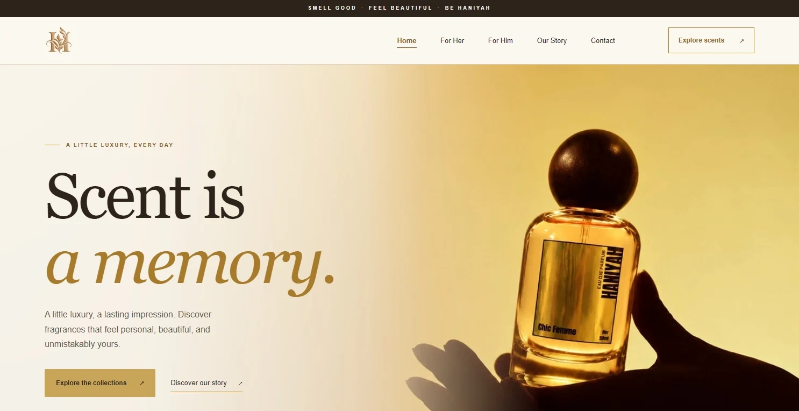
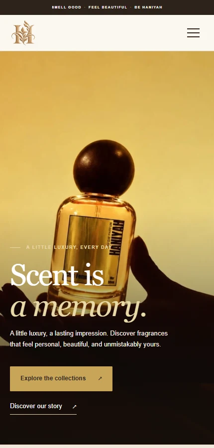
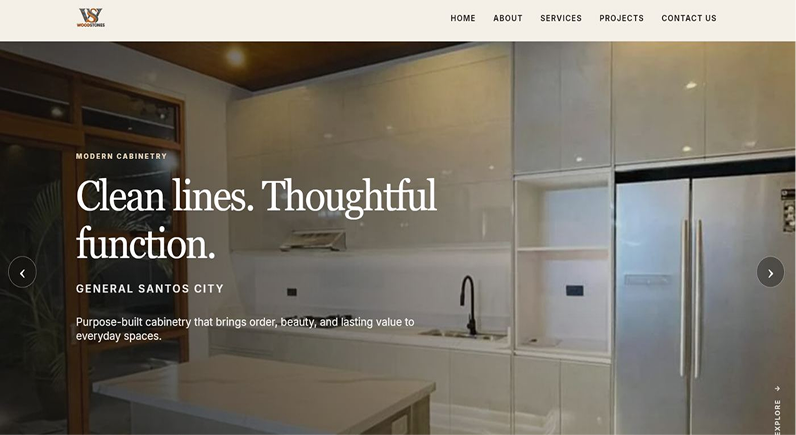

BUSINESS WEBSITES
Clear, professional websites for businesses that need their services, work, and contact information presented properly.
WEB DESIGN / PHILIPPINES / MIKKUN
I’m Prince Mikael O. Sabdullah, also known as MIKKUN — a multidisciplinary creative from the Philippines working across web design, branding, graphic design, motion, and digital experiences.
I design responsive websites for businesses, brands, creatives, and organizations that need a stronger online presence without looking like they came from the same template as everyone else.
Freelance web designer in the Philippines.
01 / WEB DESIGN SERVICES
The goal is not simply to put information online. I try to build websites around the identity, audience, and purpose of the person or brand behind them.
Clear, professional websites for businesses that need their services, work, and contact information presented properly.
Personal and creative portfolios designed to make the work itself feel memorable.
Product-focused websites that help customers explore collections, understand products, and continue through an inquiry or contact flow.
Focused digital pages for campaigns, launches, services, events, or individual offers.
Layouts designed and tested across desktop, tablet, and mobile rather than treating mobile as an afterthought.
Typography, colors, imagery, and visual direction carried into the website so the digital experience feels connected to the brand.
Production setup, domain connection, HTTPS, and launch support for suitable projects.
Page titles, descriptions, crawlability, sitemap, robots.txt, canonical URLs, social sharing metadata, and Search Console setup where appropriate.
02 / SELECTED WEB WORK
REAL BRANDS.
ACTUAL WEBSITES.
01 / FEATURED PROJECT
BRAND DESIGN / PRODUCT CATALOG / RESPONSIVE WEB DESIGN / 2026
An Arabic-inspired perfume brand developed from visual identity to a complete responsive fragrance catalog. The project brought together branding, product image editing, copywriting, product discovery, responsive implementation, inquiry paths, and deployment.


02 / BUSINESS WEBSITE
BUSINESS WEBSITE / DIGITAL PRESENCE / 2026
A digital home for a modular cabinetry and interior-solutions business, structured around services, completed work, nationwide coverage, and easier client inquiries.

03 / HOW I WORK
Learn what the website needs to communicate, who it is for, and what the visitor should be able to do.
Organize pages, content, hierarchy, navigation, and the overall journey before polishing the surface.
Develop the visual direction and turn it into a responsive working website.
Check desktop and mobile behavior, performance, links, accessibility basics, deployment, and launch readiness.
04 / GOOD FIT
I’m especially interested in working with:
If you need a website that feels specific to your identity instead of simply filling a premade template, that is usually where I fit best.
05 / APPROACH
The website should look like it belongs to the brand behind it.
Desktop and mobile are treated as intentional experiences, not one layout squeezed into different screens.
Because I work across branding, graphic design, image editing, motion, and web, I can think about the site as part of the larger visual identity.
06 / PHILIPPINES
I’m a multidisciplinary creative based in the Philippines and work digitally with businesses, brands, creatives, and organizations.
My work includes projects connected to businesses and creative communities in Davao City while remaining open to remote projects across the Philippines.
07 / QUESTIONS
Business websites, portfolios, product catalogs, landing pages, and other focused informational or creative websites depending on the project scope.
Yes. Responsive behavior is part of the design and implementation process, with layouts checked across multiple screen sizes.
Yes. Depending on the project, I can help carry existing branding into the site or contribute visual direction, typography, imagery, graphic design, and related brand elements.
For suitable projects, yes. This can include production setup, custom domain connection, HTTPS, and launch checks.
I can provide basic technical SEO setup such as titles, descriptions, canonical URLs, social metadata, sitemap and robots configuration, structured data where appropriate, and Google Search Console setup. Search rankings themselves cannot be guaranteed.
Pricing depends on the number of pages, complexity, content, design requirements, and functionality. Contact me with the project details so I can scope it properly.
08 / START A PROJECT
Have a business, brand, portfolio, or idea that needs a website?
Let’s figure out what it should become.